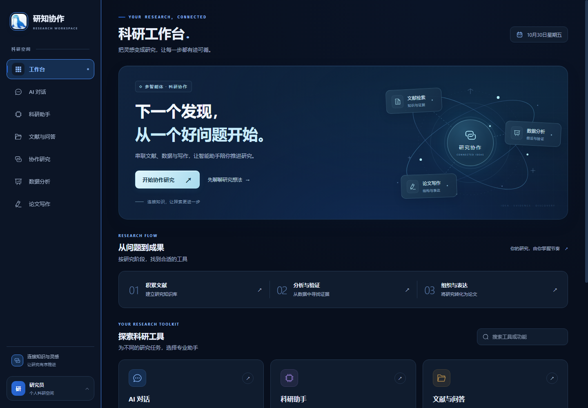

从一个值得追问的问题，到文献、数据与智能体共同抵达的答案。
把分散的工具，连接成一个连贯的研究空间。你专注问题，智能助手参与每一个关键环节。
集中管理参考文献。围绕已上传资料提问，提取结论、比较方法，让每个观点有据可循。
文献分析、实验设计与研究评审协同推进，把一个开放问题转化为可继续执行的研究方案。
预览与分析数据，生成可视化，再从大纲到章节组织论文，让发现逐步成为成果。

上传文献、整理资料，围绕问题积累研究证据。
讨论假设、比较方法，借助智能体组织研究方案。
分析数据、梳理论证，将研究进展转化为论文表达。
连接你习惯的云端供应商，或使用本地模型。配置自己的模型、API Key 与服务地址。
文献中的线索，数据中的证据，想法与想法之间，尚未发现的连接。
继续你的探索，让研究向前一步。
还没有账户？创建新账户 ↗